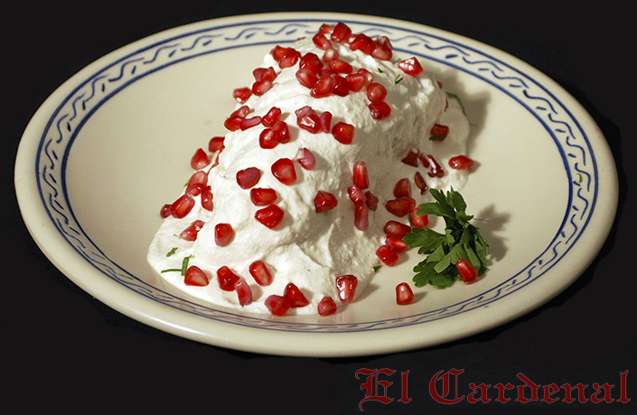
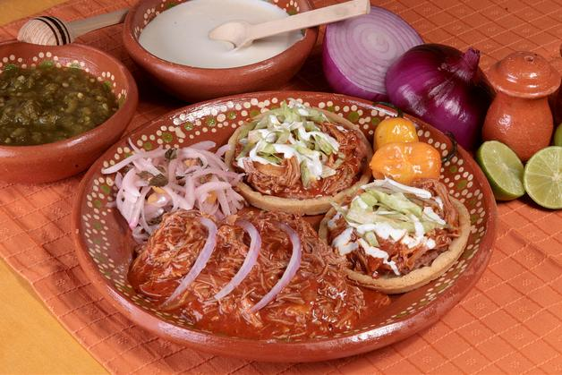
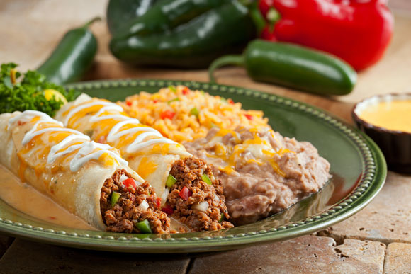
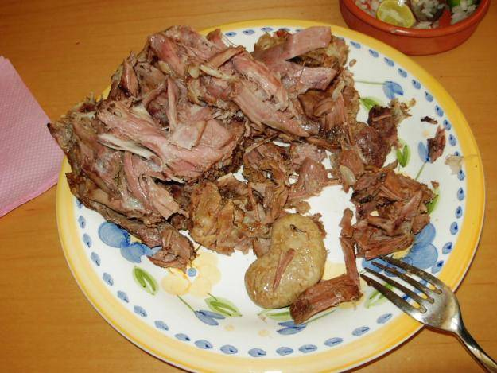
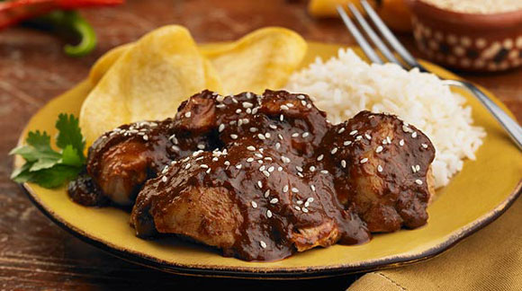
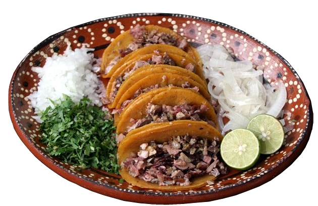
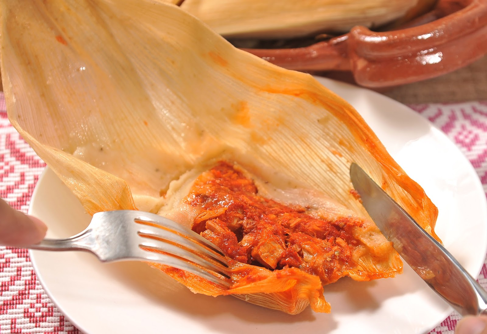
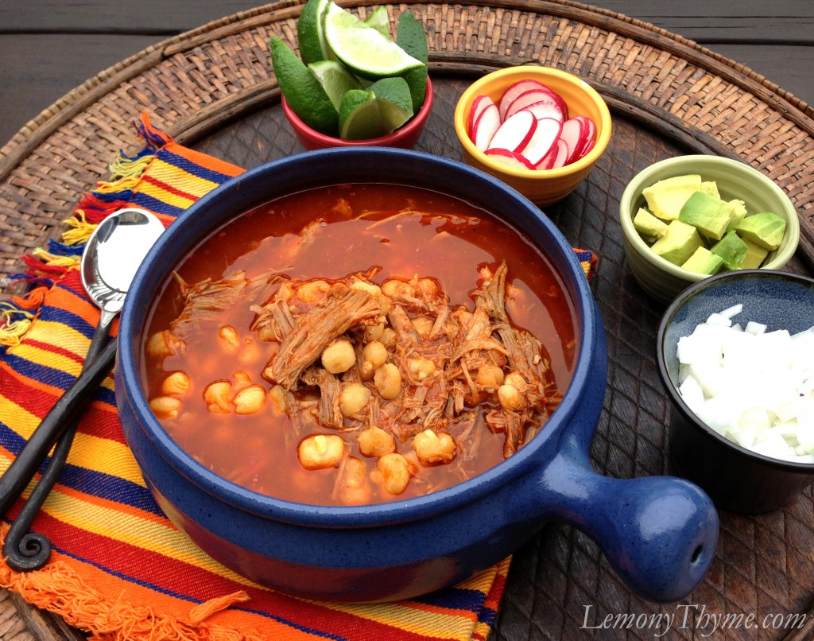
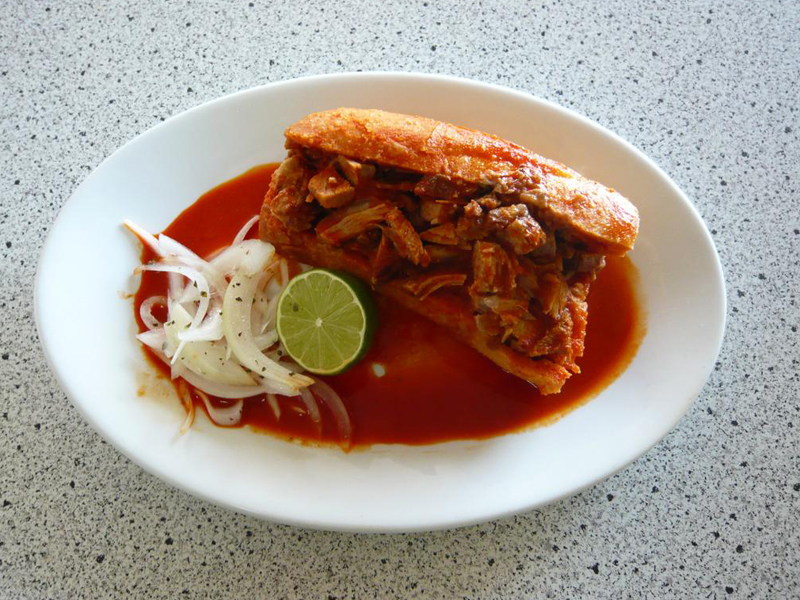
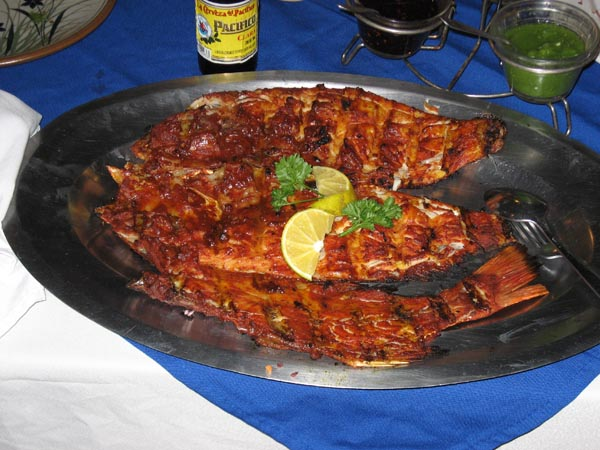

CHILES EN NOGADA
El chile en nogada, es uno de los platillos típicos de la gastronomía mexicana, más concretamente del estado de Puebla.

COCHINITA PIBIL
La cochinita pibil es un platillo de la gastronomía yucateca, basado en carne de cerdo adobada en achiote, envuelta en hoja de plátano y cocida dentro de un horno de tierra. La cochinita pibil se acompaña con cebolla morada en naranja agria Generalmente en tortas y tacos con un encurtido de chile habanero muy común en la región.

ENCHILADAS
La enchilada es un plato que en México se elabora con tortilla de maíz bañada en alguna salsa picante utilizando chile en su preparación. Dependiendo del estilo, la enchilada puede ir acompañada o rellena de carnes —pollo, pavo, res— o queso; además de ser acompañada de alguna guarnición adicional, que generalmente consiste en cebolla fresca picada o en rodajas, lechuga, crema de leche y queso.

BARBACOA
En México, el término barbacoa hace referencia principalmente al método tradicional usado para preparar diversas carnes, ya sea de vacuno, de oveja, de cabra y eventualmente de conejo, de pollo, de pescado, de venado y hasta de iguana, cociéndolas en su propio jugo o al vapor.

MOLE
La historia del mole se remonta a la época precolombina. Se narra que los aztecas preparaban para los grandes señores un platillo complejo llamado "mulli", que significa potaje o mezcla. El Mole consiste principalmente en una salsa de una gran variedad de ingredientes vertida sobre piezas de carne que pueden ser desde un Guajolote hasta Cerdo.

TACOS
El taco, como cualquier otra manifestación de cultura culinaria de México está directamente asociado a los ingredientes utilizados en cada región geográfica del país. Lo cierto es que en los últimos años los tacos se han convertido en uno de los platillos más reconocidos de México en el mundo.

TAMALES
Según los expertos México es el país con más variedad de tamales de todo el mundo. Cada estado o ciudad o pueblo tiene decenas de tamales. Se calcula que la variedad de tamales podría alcanzar casi 5,000 en todo México. Se llaman de muchas formas: vaporcitos, nacatamales, chuchitos, chanchamitos, padzitos, estos es, tamales mexicanos.

POZOLE
El pozole es un platillo difundido en casi todo el país, los más famosos son los de Jalisco, Michoacán, Tepic, Colima, Guanajuato y Guerrero. Entre los que se destacan, desde luego, el pozole blanco que es el básico, aunque también existen sus variantes en verde y rojo, curiosamente los tres colores de la bandera de México.

TORTA AHOGADA
La torta ahogada es uno de los platillos más típicos y representativos del estado Jalisco en México, particularmente de la ciudad de Guadalajara; aunque su popularidad se ha extendido a diferentes regiones del país.
